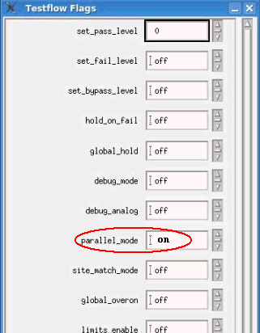

Setting Flags for Parallel Execution
There are two flags you can set to determine whether testsuites are run in parallel or sequentially, namely,
Testsuite Flag "Allow Parallel"
- This flag determines whether a testsuite can be executed in parallel for all sites.
- The flag can be set in the dialog box appearing when inserting a new testsuite or by double-clicking an existing testsuite within the Testflow Editor.
Testflow Flag "Parallel Mode"
This flag determines whether parallel testing is allowed within a testflow. It can be used to quickly switch off parallel testing for all testsuites. If set to false, this flag overrides the Testsuite Flag "Allow Parallel".
For multisite testing the "parallel_mode" flag should be set to "on" as shown in the figure below.

For further information on how to set these flags, see Flags tab
Note These flags are especially helpful for debugging if you wish to eliminate
problems caused by parallel execution. However, Do not forget to reset the flags when debugging is
finished!
Note If any of the following testsuite flags is active, it makes the execution
serial.
- "per pin on pass"
- "per pin on fail"
- "pass value"
- "fail value"
Functional changes
- Introduced before SmarTest 6.3.2
- SmarTest 7.1.0: Testflow optimization function removed